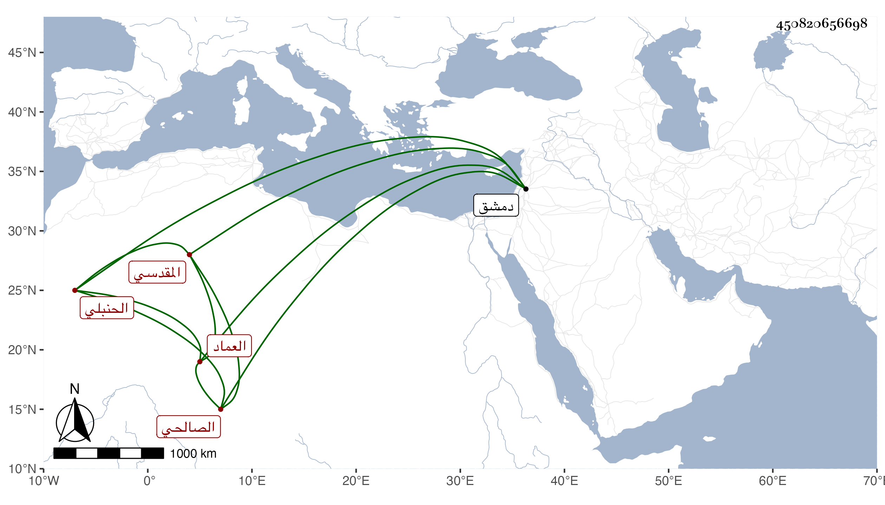

0902Sakhawi.DawLamic.ITO20230111-ara1.EIS1600.450820656698
Biography ID: 450820656698
31
أبو بكر بن إبرهيم بن العز محمد بن العز إبرهيم بن عبد الله بن أبي عمر محمد ابن أحمد بن قدامة العماد المقدسي ثم الصالحي الحنبلي ويعرف بالفرائضي . ولد سنة ثلاث وعشرين وسبعمائة وسمع من الحجار وأبي عبد الله بن الزراد وأبي بكر بن الرضى وأحمد بن الزبداني وأبي العباس بن الجزري وزينب ابنة الكمال وخلق وأجاز له أبو القاسم بن عساكر وأبو نصر بن الشيرازي وأبو بكر بن يوسف المزي وآخرون وذكره شيخنا في معجمه فقال مسند الصالحية كان عسرا في التحديث فسهل الله لي خلقه إلى أن أكثرت عنه في مدة يسيرة مات في أيام حصار دمشق بالتتار وقيل بعد رحيله عنها سنة ثلاث رحمه الله وذكره في أنبائه أيضا والفاسي في ذيله والمقريزي في عقوده .
